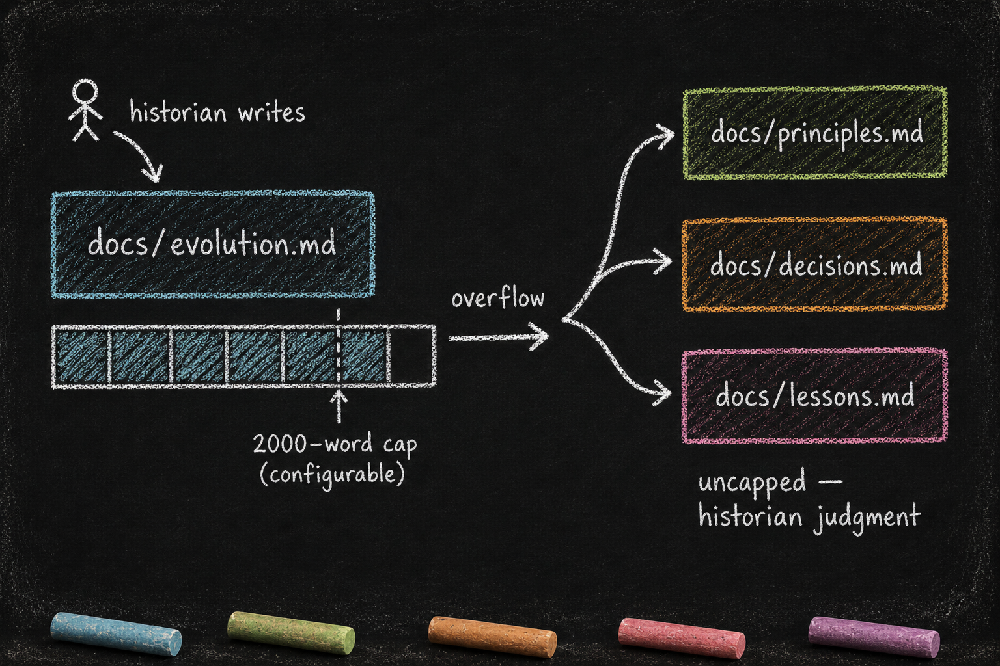

docs/ and the Historian
Essay 7.5 — The Plugin Kit, Part 5 of 9.
Essay 7.4 opened the data organ — private, script-mediated, mutation-serialized. This sub-essay opens the documentation organ — the surface where the plugin carries its own narrated history, what it learned across cycles, why it was shaped the way it was. The hidden state is what the plugin knows about itself right now; docs/ is what it remembers about how it got here.
docs/ — The Documentation Layer + The Historian
What it is. A directory carrying the plugin’s narrated knowledge. These files are common across nearly every plugin:
docs/CLAUDE.md— the docs/ directory’s own descriptor; names the conventions docs/ files follow.docs/evolution.md— the plugin’s auto-narrated history. Capped (currently 2000 words in the prototype, configurable viaconfig.conf) by a hard-enforcedPreToolUsehook. The historian subagent writes this; the operator typically does not.docs/principles.mdORdocs/decisions.md(depending on the plugin) — the overflow surface for design rationale that doesn’t fit in evolution.md. ⓘ
Who reads them. The agent, especially at plugin unlock — the lock-manager auto-injects docs/evolution.md into the agent’s context every time PLUGIN-LOCK is approved. This is how the editor inherits the plugin’s reasoning before touching code. The historian subagent reads evolution.md when re-narrating new commits. New users read these to understand a plugin’s lived history before customizing. ⓘ
Who writes them. The historian subagent writes docs/evolution.md when dispatched by the drift-counter ratchet. The operator writes the sibling files (docs/principles.md, docs/decisions.md) through gmode — these surfaces are not under the same auto-narration discipline. ⓘ
What they depend on. docs/CLAUDE.md (the descriptor that names the documentation conventions). The plugin’s drift counter inside data.json (which fires the historian when drift exceeds threshold). The hard-cap hook (evolution-cap.sh inside plugin_integrity, which blocks any edit pushing evolution.md past the configured cap). ⓘ
The relationship between evolution.md and its siblings is the architectural heart of the documentation layer. Evolution.md is the 2000-word summary; when the historian’s narrative needs more depth, the cap forces overflow into a sibling file — docs/principles.md for architectural rationale, docs/decisions.md for specific design choices, docs/lessons.md for hard-won cycle lessons. The historian decides at narration time which sibling file each overflow chunk belongs in, and evolution.md becomes an index pointing at the siblings. This is the canonical example of soft-versus-hard discipline at the size-cap level: only docs/evolution.md carries a hard cap; the siblings absorb the overflow under the historian’s judgment. ⓘ

Target asset: assets/images/blog/b7/evolution-cap-overflow-b7-5.png
The new-plugin lens. When you guide your seed to create a plugin, the seed authors the cycle-1 docs/evolution.md by hand — a short narrative of the plugin’s birth, what concern it owns, what it doesn’t own. The historian subagent takes over from cycle 2 onward, re-narrating each cycle’s commits into evolution.md until it hits the cap. From there, overflow goes into docs/principles.md (or whichever sibling the plugin’s docs/CLAUDE.md establishes). Tell your seed: every plugin gets a historian by birth. Without one, the plugin’s memory dies with the operator’s session.
A consulting practice’s seed could carry the same shape — every plugin (intake, engagement, deliverable QA) ships a docs/evolution.md capped narration of how its standards drifted across client cycles, with the historian dispatching after every N engagement-close commits.
The ratchet fires at the seam. Drift accumulates silently between unlocks; the next unlock attempt is the seam where the historian-injection voice fires, instructing the agent to invoke the per-plugin historian before proceeding. ⓘ
Documentation is auto-narrated, word-capped, and overflow-routed. The historian writes; the operator reviews; the cap forces compression that protects the per-unlock context budget. The next sub-essay opens the organ where the plugin’s delegated investigation lives — agents/, the per-plugin subagent pool, plus the 80/20 dispatch budget that mechanizes how much direct action the main session is allowed before it must delegate again.
Essay 7.5 — The Plugin Kit, Part 5 of 9.
Previous: Essay 7.4 — data.json — The Hidden State — private state, script-mediated, atomic mutation. Next: Essay 7.6 — agents/ and the 80/20 Dispatch Budget — per-plugin subagent pools + the budget the main session must earn.
Comments